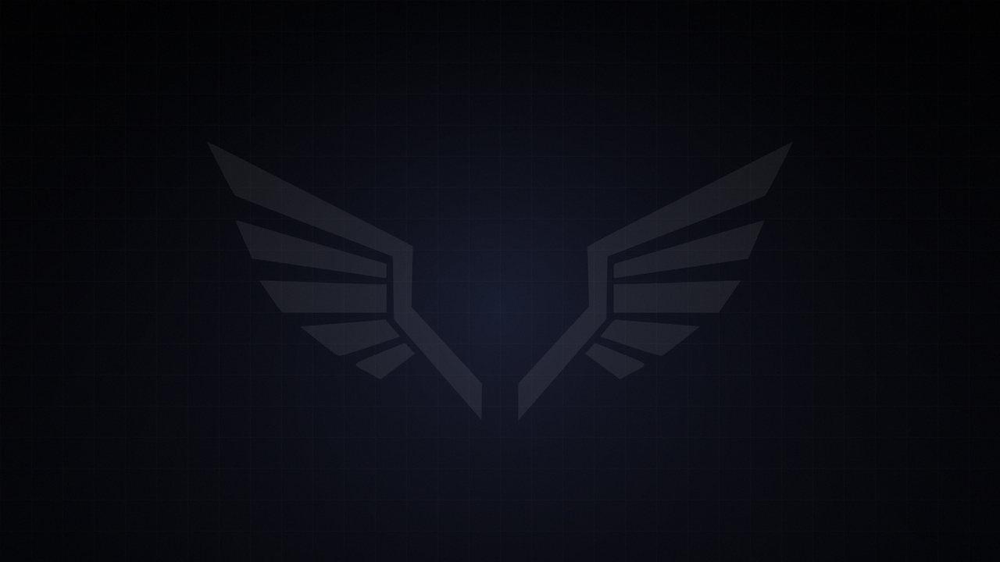
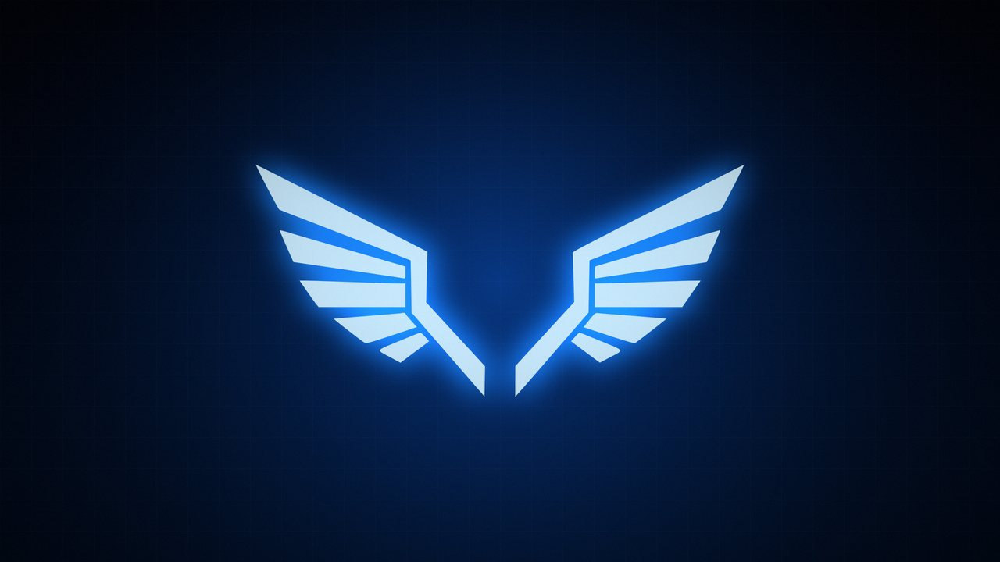
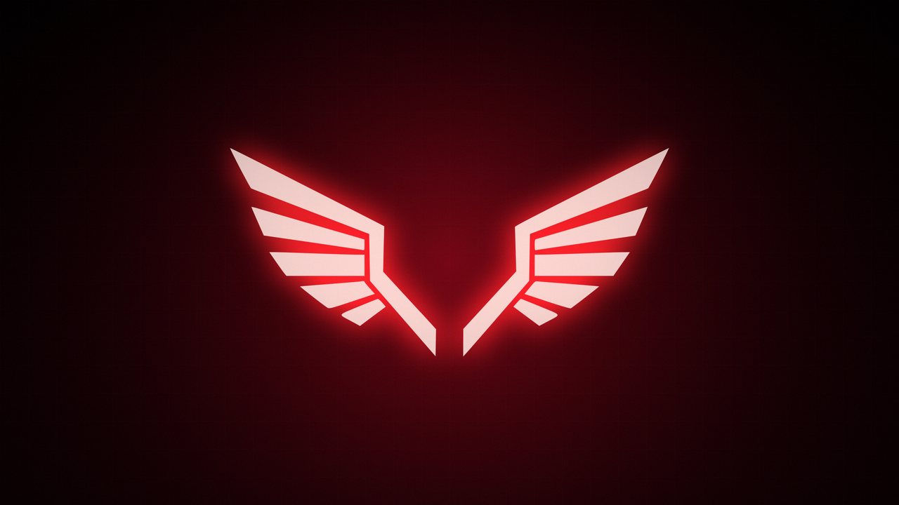
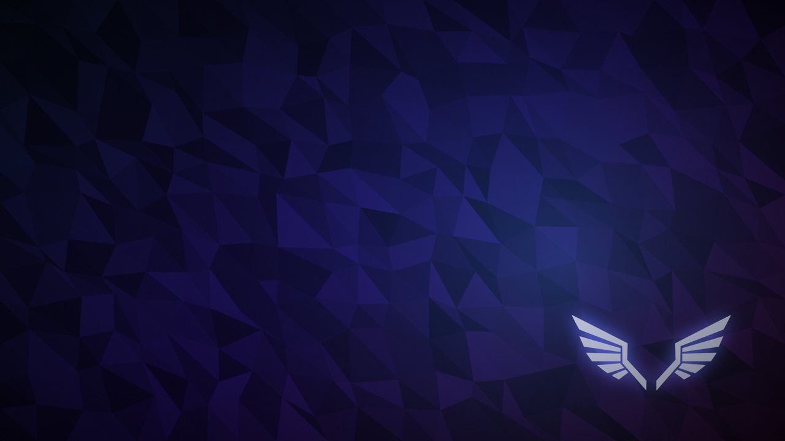

Özellikler
Angel OS'un sistemle birlikte gelenleri ve kurulum akışı.
Taban ve paketler
Sistem Arch Linux üzerine kuruludur ve paketleri pacman ile yönetir. Arch'ın resmi depoları ve AUR kullanılabilir.
Rolling release modeli sayesinde yeni sürüm beklemeden güncel kalır.
Masaüstü
Modern, hızlı bir masaüstü gelir. Wayland oturumu açılır ve giriş ekranı hazır gelir.
Hazır uygulamalar
- LibreOffice
- Visual Studio Code (Code - OSS)
- Git
- Geany
- Firefox
- Dolphin
- Konsole
- Kate
- Okular
- Gwenview
- Spectacle
- Ark
- KCalc
- mpv
- Timeshift
- Partition Manager
- Wine
- ArtCraft Launcher
- fastfetch
- htop
Karşılama uygulaması
İlk açılışta Angel Welcome penceresi güncelleme, ek çekirdek kurulumu ve topluluk bağlantıları için kısayollar sunar.
Ses ve ağ
Ses için PipeWire, ağ için NetworkManager gelir. Wi-Fi ve kablolu bağlantı kurulumdan sonra hazırdır.
Açılış
Açılışta siyah zemin üzerinde kanat logosu ve dönen noktalar görünür (Plymouth). BIOS boot menüsünün arka planı da Angel OS logosudur.
Terminal
fastfetch, Angel OS'un kendi ASCII kanat logosunu gösterir.
Kurulum akışı
Kurulum internet bağlantısı ister, çünkü temel sistem kurulum sırasında Arch depolarından indirilir.
- Başlat Masaüstündeki Angel OS'u Kur kısayolu doğrudan kurulum aracını açar.
- Dil Kurulum dili seçilir. Karşılama ekranı 12 dilde yazılıdır.
- Saat dilimi Konum haritadan seçilir.
- Klavye Klavye düzeni seçilir ve denenir.
- Disk Diskin tamamı ya da elle bölümleme seçilir.
- Çekirdekler İstersen ek çekirdekler seçilir. Standart çekirdek zaten kurulur.
- Kullanıcı Kullanıcı adı, parola ve bilgisayar adı girilir.
- Özet ve kurulum Seçimler gözden geçirilir. Temel sistem internetten kurulur, ardından Angel OS ayarları uygulanır.
Görünüm
Dört duvar kağıdı kurulu gelir. Masaüstüne sağ tıklayıp Duvar Kağıdını Yapılandır ile değiştirebilirsin.



